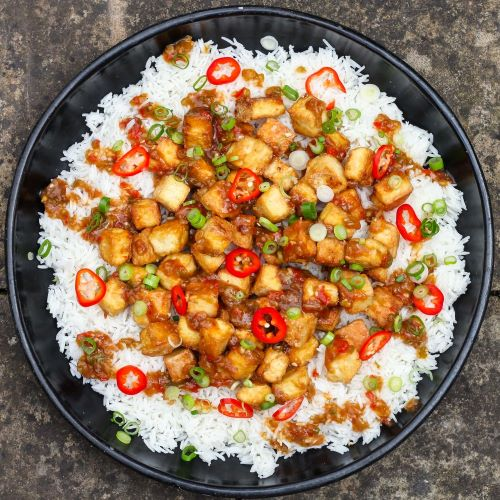
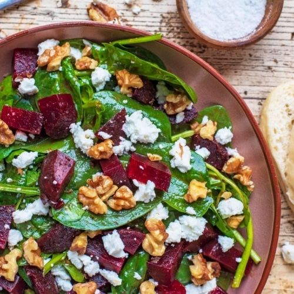

Crispy Sesame Tofu
Ingredients:
- 280g of Tofu
- Knob of ginger
- Sesame Oil
- Plain or Corn Flour
- Soy Sauce
- Spring Onions
- Basmati Rice
- Red Chillies
- Garlic
- Chop your Tofu up into little cubes. Dab cubes with kitchen roll to remove the excess moisture. Place the Tofu cubes into a bowl.
- Add 4 tablespoons of soy sauce, one heaped tablespoon of grated ginger, a teaspoon of grated garlic, and a teaspoon of sesame oil. Gently mix together.
- Cover the bowl, place it in the fridge and leave to marinate for 15 minutes.
- Remove Tofoo from the fridge. Pour a good helping of cornflour into a bowl. One by one, roll each Tofu cube in the flour so they are coated on all sides. By the end, they should all have a gummy layer of flour on each side.
- Put on the rice. Start frying the tofu in a pan of oil, turning them until they turn golden.
- Garnish with some chopped spring onions and tuck in!

Coconut Cauliflower Coconut Curry
Ingredients:
- Cauliflower
- Chickpeas
- Coconut Milk
- 2 Limes
- Red Chillies
- 2 Brown Onions
- Garlic
- 4 Tomatoes
- Finely chop 2 onions and 3 cloves of garlic. Grate a big chunk of ginger. Throw everything into a pan with some oil and let it soften for 5 minutes over a medium heat.
- Add 1 teaspoon of turmeric, 2 teaspoons of cumin, 2 teaspoons of ground coriander seeds and 2 and a half teaspoons of garam masala. Mix it all together.
- Break your cauliflower into little florets, and add that to the pan.
- Chop tomatoes and add to pan. Add 600g of chickpeas, can of coconut milk and chili. Mix!
- Allow curry to simmer on medium heat for 20mins. Squeeze lime ontop and enjoy!

Chicken and Chorizo Tray Bake
Ingredients:
- 2 onion
- Garlic
- 4 Chicken Thighs
- 1 Chorizo stick
- Potatoes
- Rosemary
- Lemon
- Chop the onions. Peel the clove of garlic. Peel and chop the potatoes into small chunks.
- Turn over to 180 degrees. Chop chorizo into discs about o.5cm thick. Put all ingredients into a tray.
- Once all ingredients are in the tray, cover with a good amount of olive oil, sprinkle rosemary and lemon juice, salt and pepper. Whack it in the oven!
- Cook any vegetables you would like separately. Cook for around an hour.
- Very easy meal and tastes great! Enjoy!
Roasted Beetroot and Goats Cheese Salad
Ingredients:
- 250g cooked beetroot, cut into wedges
- 4 tbsp olive oil
- 3 tbsp balsamic vinegar
- 100g goats cheese
- 50g walnuts
- salad
- Heat oven to 180C and put the beetroot in a roadting tin with 1tbsp oil, 1 tbsp balsamic, salt and pepper
- Roast for 2-10mins and then boil in water for 6 mins
- For FRESSING add remaining oil and vinegar in a small bowl with seasoning. Add salad leaves and cucumber in and toss together.
- Add chopped up cheese and walnuts to roasting tin for a few mins to soften.
- Pile leaves, beetroot, cheese and nuts to the plate and drizzle remaining dressing over the top! Enjoy
